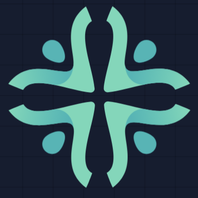

<div class="flex h-screen w-full overflow-hidden bg-zinc-950 text-gray-300">

    <!-- Sidebar for AI Assistant -->
    <aside id="assistant-sidebar"
        class="border-r border-zinc-800 flex flex-col bg-[#171615] shadow-xl shrink-0 z-20 relative">

        <!-- Expanded Content -->
        <div id="sidebar-expanded-content"
            class="w-[400px] h-full flex flex-col shrink-0 relative z-20 bg-[#171615] overflow-hidden">
            <!-- Header -->
            <div class="p-4 border-b border-white/10 flex items-center justify-between shrink-0">
                <h2 class="font-bold text-sm tracking-widest uppercase text-zinc-400">REZE Assistant</h2>
                <div class="flex space-x-2 text-zinc-400">
                    <button id="btn-settings" class="p-1 hover:text-white transition-colors" title="Settings">
                        <svg class="w-4 h-4" fill="none" stroke="currentColor" viewBox="0 0 24 24">
                            <path stroke-linecap="round" stroke-linejoin="round" stroke-width="2"
                                d="M10.325 4.317c.426-1.756 2.924-1.756 3.35 0a1.724 1.724 0 002.573 1.066c1.543-.94 3.31.826 2.37 2.37a1.724 1.724 0 001.065 2.572c1.756.426 1.756 2.924 0 3.35a1.724 1.724 0 00-1.066 2.573c.94 1.543-.826 3.31-2.37 2.37a1.724 1.724 0 00-2.572 1.065c-.426 1.756-2.924 1.756-3.35 0a1.724 1.724 0 00-2.573-1.066c-1.543.94-3.31-.826-2.37-2.37a1.724 1.724 0 00-1.065-2.572c-1.756-.426-1.756-2.924 0-3.35a1.724 1.724 0 001.066-2.573c-.94-1.543.826-3.31 2.37-2.37.996.608 2.296.07 2.572-1.065z">
                            </path>
                            <path stroke-linecap="round" stroke-linejoin="round" stroke-width="2"
                                d="M15 12a3 3 0 11-6 0 3 3 0 016 0z"></path>
                        </svg>
                    </button>
                    <button id="logout-btn" class="p-1 hover:text-white transition-colors" title="Sign Out">
                        <svg class="w-4 h-4" fill="none" stroke="currentColor" viewBox="0 0 24 24">
                            <path stroke-linecap="round" stroke-linejoin="round" stroke-width="2"
                                d="M17 16l4-4m0 0l-4-4m4 4H7m6 4v1a3 3 0 01-3 3H6a3 3 0 01-3-3V7a3 3 0 013-3h4a3 3 0 013 3v1">
                            </path>
                        </svg>
                    </button>
                </div>
            </div>

            <!-- Empty State (Welcome screen) -->
            <div id="chat-empty" class="flex-1 flex flex-col items-center justify-center px-4 overflow-y-auto">
                <h1 class="text-white text-5xl font-medium tracking-tight mb-8 font-sans">REZE</h1>
            </div>

            <!-- Active Chat Messages List (hidden initially) -->
            <div id="chat-messages-container" class="hidden flex-1 overflow-y-auto px-4 py-6 scroll-smooth">
                <div id="chat-messages" class="w-full mx-auto space-y-8">
                    <!-- Messages injected here -->
                </div>
                <div id="chat-status" class="hidden flex items-center gap-3 pl-11 mt-4">
                    <div class="w-2 h-2 rounded-full bg-white animate-pulse"></div>
                    <span id="chat-status-text" class="text-xs text-gray-500 animate-pulse"></span>
                </div>
                <div id="messages-end" class="h-6"></div>
            </div>

            <!-- Chat Input Area (pined to bottom) -->
            <div class="p-4 bg-gradient-to-t from-[#171615] via-[#171615] to-transparent shrink-0">
                <div
                    class="w-full bg-[#201f1e] rounded-2xl border border-white/10 p-3 transition-all focus-within:border-white/20 shadow-2xl flex flex-col">
                    <textarea id="chat-input" placeholder="Ask anything. Type @ for sources and / for shortcuts."
                        rows="1"
                        class="w-full bg-transparent text-white text-sm outline-none resize-none placeholder:text-gray-500 overflow-hidden leading-snug min-h-[44px] block"></textarea>

                    <div class="flex items-center justify-between mt-2 pt-1">
                        <div class="flex items-center gap-2">
                            <button
                                class="p-1.5 rounded-full hover:bg-white/5 text-gray-400 border border-white/10 cursor-pointer">
                                <svg class="w-4 h-4" fill="none" stroke="currentColor" viewBox="0 0 24 24">
                                    <path stroke-linecap="round" stroke-linejoin="round" stroke-width="2"
                                        d="M12 4v16m8-8H4"></path>
                                </svg>
                            </button>
                            <!-- Reasoning Toggle UI -->
                            <label class="flex items-center cursor-pointer">
                                <div class="relative">
                                    <input type="checkbox" id="toggle-reasoning" class="sr-only">
                                    <div
                                        class="w-8 h-4 bg-gray-600 rounded-full shadow-inner peer peer-checked:bg-white transition-colors">
                                    </div>
                                    <div
                                        class="toggle-dot absolute w-3 h-3 bg-white rounded-full shadow -left-0.5 -top-0.5 peer-checked:translate-x-4 peer-checked:bg-black transition-transform duration-200">
                                    </div>
                                </div>
                                <span class="ml-2 text-xs font-medium text-gray-400">Reasoning</span>
                            </label>
                        </div>

                        <button id="btn-send-chat" disabled
                            class="p-2 rounded-full transition-all shadow-lg hover:scale-105 disabled:opacity-50 disabled:hover:scale-100 disabled:cursor-not-allowed bg-white/10 text-gray-500 data-[active=true]:bg-white data-[active=true]:text-black">
                            <svg class="w-4 h-4 rotate-90" fill="none" stroke="currentColor" viewBox="0 0 24 24">
                                <path stroke-linecap="round" stroke-linejoin="round" stroke-width="2"
                                    d="M12 19V6m0 0l-6 6m6-6l6 6"></path>
                            </svg>
                        </button>
                    </div>
                </div>
            </div>
        </div>

        <div id="sidebar-collapsed-content"
            class="absolute inset-0 w-[60px] h-full flex flex-col items-center justify-between py-4 border-r border-zinc-800 shrink-0 z-10 overflow-hidden">
            <!-- Top Logo -->
            <div
                class="w-10 h-10 flex items-center justify-center rounded-xl text-white mt-1 cursor-default pointer-events-none">
                
            </div>

            <!-- Bottom Settings Button -->
            <button id="btn-settings-mini"
                class="p-2.5 hover:bg-white/10 rounded-xl transition-colors text-zinc-400 hover:text-white"
                title="Settings">
                <svg class="w-5 h-5" fill="none" stroke="currentColor" viewBox="0 0 24 24">
                    <path stroke-linecap="round" stroke-linejoin="round" stroke-width="2"
                        d="M10.325 4.317c.426-1.756 2.924-1.756 3.35 0a1.724 1.724 0 002.573 1.066c1.543-.94 3.31.826 2.37 2.37a1.724 1.724 0 001.065 2.572c1.756.426 1.756 2.924 0 3.35a1.724 1.724 0 00-1.066 2.573c.94 1.543-.826 3.31-2.37 2.37a1.724 1.724 0 00-2.572 1.065c-.426 1.756-2.924 1.756-3.35 0a1.724 1.724 0 00-2.573-1.066c-1.543.94-3.31-.826-2.37-2.37a1.724 1.724 0 00-1.065-2.572c-1.756-.426-1.756-2.924 0-3.35a1.724 1.724 0 001.066-2.573c-.94-1.543.826-3.31 2.37-2.37.996.608 2.296.07 2.572-1.065z">
                    </path>
                    <path stroke-linecap="round" stroke-linejoin="round" stroke-width="2"
                        d="M15 12a3 3 0 11-6 0 3 3 0 016 0z"></path>
                </svg>
            </button>
        </div>

        <!-- Floating Edge Toggle Button -->
        <button id="btn-toggle-sidebar"
            class="bg-white/5 hover:bg-white/20 border border-white/10 rounded-full flex items-center justify-center text-zinc-500 hover:text-white opacity-40 hover:opacity-100 transition-all group shadow-lg ring-1 ring-black/50">
            <svg class="w-4 h-4 transition-transform duration-300" id="toggle-icon-svg" fill="none"
                stroke="currentColor" viewBox="0 0 24 24">
                <path stroke-linecap="round" stroke-linejoin="round" stroke-width="2" d="M15 19l-7-7 7-7"></path>
            </svg>
        </button>
    </aside>

    <!-- Main Content Area -->
    <main class="flex-1 flex flex-col h-full overflow-hidden relative p-4 gap-4">

        <!-- Top Nav Bar -->
        <header
            class="flex items-center bg-zinc-900 border border-zinc-800 rounded-full px-4 py-2 shrink-0 shadow-sm z-10 gap-2">
            <div class="flex space-x-1 shrink-0 text-zinc-400 items-center">
                <button id="btn-back" class="p-1.5 hover:bg-zinc-800 hover:text-white rounded-full transition-colors"
                    title="Back">
                    <svg class="w-4 h-4" fill="none" stroke="currentColor" viewBox="0 0 24 24">
                        <path stroke-linecap="round" stroke-linejoin="round" stroke-width="2" d="M15 19l-7-7 7-7">
                        </path>
                    </svg>
                </button>
                <button id="btn-forward" class="p-1.5 hover:bg-zinc-800 hover:text-white rounded-full transition-colors"
                    title="Forward">
                    <svg class="w-4 h-4" fill="none" stroke="currentColor" viewBox="0 0 24 24">
                        <path stroke-linecap="round" stroke-linejoin="round" stroke-width="2" d="M9 5l7 7-7 7"></path>
                    </svg>
                </button>
                <button id="btn-refresh" class="p-1.5 hover:bg-zinc-800 hover:text-white rounded-full transition-colors"
                    title="Refresh">
                    <svg class="w-4 h-4" fill="none" stroke="currentColor" viewBox="0 0 24 24">
                        <path stroke-linecap="round" stroke-linejoin="round" stroke-width="2"
                            d="M4 4v5h.582m15.356 2A8.001 8.001 0 004.582 9m0 0H9m11 11v-5h-.581m0 0a8.003 8.003 0 01-15.357-2m15.357 2H15">
                        </path>
                    </svg>
                </button>
            </div>

            <form id="url-form" class="flex-1 flex items-center relative pl-2">
                <div class="absolute inset-y-0 left-0 flex items-center pl-3 pointer-events-none text-zinc-500">
                    <svg class="w-4 h-4" fill="none" stroke="currentColor" viewBox="0 0 24 24">
                        <path stroke-linecap="round" stroke-linejoin="round" stroke-width="2"
                            d="M21 21l-6-6m2-5a7 7 0 11-14 0 7 7 0 0114 0z"></path>
                    </svg>
                </div>
                <!-- Load reze-browser.vercel.app as the default! -->
                <input type="text" id="url-input"
                    class="w-full bg-zinc-950 border border-zinc-800 focus:border-zinc-700 rounded-full pl-9 pr-4 py-1.5 text-sm text-white placeholder-zinc-500 focus:outline-none transition-colors"
                    value="https://reze-browser.vercel.app">
            </form>
        </header>

        <!-- The Bordered Browser Canvas -->
        <div class="flex-1 min-h-0 w-full relative group">
            <!-- Glow Container wrapping the webview -->
            <div
                class="w-full h-full comet-border-container flex p-[2px] rounded-xl overflow-hidden shadow-[0_0_40px_rgba(0,120,255,0.15)] transition-shadow duration-500 group-hover:shadow-[0_0_50px_rgba(138,43,226,0.25)]">
                <!-- The Inner wrapper with background -->
                <div class="relative w-full h-full bg-[#1c1c1c] rounded-[10px] overflow-hidden flex z-0">
                    <webview id="browser-view" src="https://reze-browser.vercel.app"
                        class="w-full h-full flex-1 border-none outline-none z-10 bg-white" autosize="on"></webview>
                </div>
            </div>
        </div>
    </main>

    <!-- Settings Modal (Hidden by default) -->
    <div id="settings-modal"
        class="hidden fixed inset-0 z-50 flex items-center justify-center p-4 bg-black/60 backdrop-blur-sm transition-opacity">
        <div
            class="w-full max-w-md bg-[#1d1c1b] border border-white/10 rounded-2xl shadow-2xl overflow-hidden p-6 relative">
            <div class="flex items-center justify-between mb-4 pb-4 border-b border-white/10">
                <h2 class="text-xl font-semibold text-white flex items-center gap-2">Settings</h2>
                <button id="btn-close-settings" class="text-gray-400 hover:text-white"><svg class="w-5 h-5" fill="none"
                        stroke="currentColor" viewBox="0 0 24 24">
                        <path stroke-linecap="round" stroke-linejoin="round" stroke-width="2" d="M6 18L18 6M6 6l12 12">
                        </path>
                    </svg></button>
            </div>

            <div class="space-y-4">
                <div>
                    <label class="text-xs font-medium text-gray-400">Google API Key</label>
                    <input type="password" id="set-google-api"
                        class="w-full bg-[#11100f] border border-white/10 rounded-xl px-3 py-2 text-white outline-none focus:border-blue-500/50 text-sm mt-1">
                </div>
                <div>
                    <label class="text-xs font-medium text-gray-400">CSE ID</label>
                    <input type="text" id="set-cse-id"
                        class="w-full bg-[#11100f] border border-white/10 rounded-xl px-3 py-2 text-white outline-none focus:border-blue-500/50 text-sm mt-1">
                </div>
                <div>
                    <label class="text-xs font-medium text-gray-400">OpenRouter API Key</label>
                    <input type="password" id="set-openrouter-api"
                        class="w-full bg-[#11100f] border border-white/10 rounded-xl px-3 py-2 text-white outline-none focus:border-blue-500/50 text-sm mt-1">
                </div>
                <div>
                    <label class="text-xs font-medium text-gray-400">OpenRouter Model</label>
                    <input type="text" id="set-openrouter-model" value="stepfun/step-3.5-flash:free"
                        class="w-full bg-[#11100f] border border-white/10 rounded-xl px-3 py-2 text-white outline-none focus:border-blue-500/50 text-sm mt-1">
                </div>
            </div>

            <p id="settings-msg" class="text-xs text-green-400 text-center mt-3 h-4"></p>

            <div class="flex gap-3 mt-2">
                <button id="btn-cancel-settings"
                    class="flex-1 px-4 py-2 rounded-xl border border-white/10 text-white font-medium hover:bg-white/5 text-sm transition-colors">Cancel</button>
                <button id="btn-save-settings"
                    class="flex-1 px-4 py-2 rounded-xl bg-white text-black font-semibold hover:bg-white/90 text-sm transition-all text-center">Save</button>
            </div>
        </div>
    </div>

</div>

<style>
    .toggle-dot {
        top: 2px;
        left: 2px;
    }

    input:checked~.toggle-dot {
        transform: translateX(100%);
        background-color: #000;
    }

    input:checked~.w-8 {
        background-color: #fff;
    }

    /* Sidebar Animations */
    #assistant-sidebar {
        width: 400px;
        transition: width 0.3s cubic-bezier(0.4, 0, 0.2, 1);
    }

    #assistant-sidebar.mini-collapsed {
        width: 60px;
    }

    #sidebar-expanded-content {
        transition: opacity 0.2s ease, transform 0.2s ease;
        opacity: 1;
        pointer-events: auto;
        transform: translateX(0);
    }

    #assistant-sidebar.mini-collapsed #sidebar-expanded-content {
        opacity: 0;
        pointer-events: none;
        transform: translateX(-20px);
    }

    #sidebar-collapsed-content {
        transition: opacity 0.2s ease, transform 0.2s ease;
        opacity: 0;
        pointer-events: none;
        transform: translateX(20px);
    }

    #assistant-sidebar.mini-collapsed #sidebar-collapsed-content {
        opacity: 1;
        pointer-events: auto;
        transform: translateX(0);
    }

    #assistant-sidebar.mini-collapsed #toggle-icon-svg {
        transform: rotate(180deg);
    }

    #btn-toggle-sidebar {
        position: absolute;
        right: -12px;
        top: 50%;
        transform: translateY(-50%);
        width: 24px;
        height: 48px;
        z-index: 50;
    }
</style>